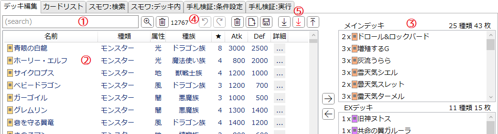
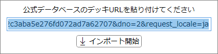
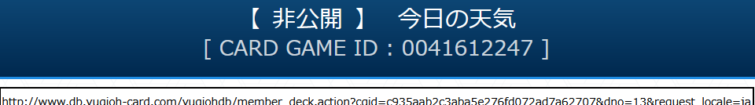
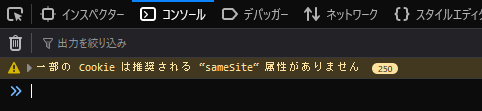
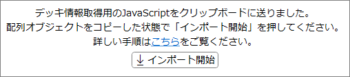
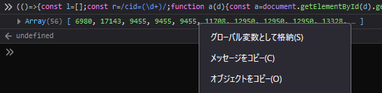
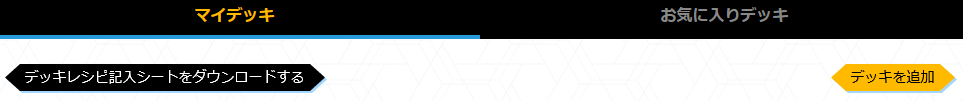
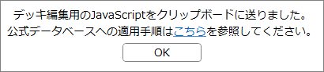

「デッキ編集」タブ
デッキ(カードセット)を編集するためのタブです。
ここで設定された内容はスモワ検索や手札検証などで利用されます。
このタブで設定した内容はアプリ設定に記憶され、次回以降の起動時に復元されます。
注意
実用上の利便性のため、以下の仕様となっています。- デッキ/EXデッキともに枚数の上限はありません。
-
リミットレギュレーションを無視して全てのカードを3枚まで採用できます。
- 参考としてカードにはリミットアイコンが表示されます。
- 「ルール上同名カードとして扱う」カードもそれぞれ3枚ずつ採用できます。
説明

-
サーチバー
-
テキストボックスに入力してEnterを押すとテキスト検索を適用します。
詳しくは検索ウィンドウ/文字列検索を参照してください。 -
 : 検索ウィンドウを開きます。
: 検索ウィンドウを開きます。
-
 : 絞り込みを解除します。
: 絞り込みを解除します。
- サーチバーの右端には、現在そのリストに表示されている項目の数が表示されます。
-
テキストボックスに入力してEnterを押すとテキスト検索を適用します。
-
候補リスト
- デッキに採用可能なカードの一覧です。
- Ctrlキーを押しながら項目をクリックすると複数選択を行います。
- Shiftキーを押しながら項目をクリックすると範囲選択を行います。
- Altキーを押しながら項目をクリックすると、山括弧《》で囲ったカード名がクリップボードにコピーされます。
-
項目の上で右クリックすると、選択中のカードを1枚ずつデッキに追加します。
-
項目をドラッグ&ドロップで右のリストへ運ぶ、または
 を押すことでもデッキに追加できます。
を押すことでもデッキに追加できます。
- 100枚以上のカードが選択されている場合、101枚目以降は無視されます。(追加も削除もされません)
-
項目をドラッグ&ドロップで右のリストへ運ぶ、または
-
ヘッダー(「名前」などが書かれている部分)をクリックすると、それを基準として項目をソート(並べ替え)します。
- ソートを解除(ID順にソート)したい場合は「詳細」のヘッダーをクリックしてください。
-
デッキのカードリスト
- デッキに採用されているカードの一覧です。
- Ctrlキーを押しながら項目をクリックすると複数選択を行います。
- Shiftキーを押しながら項目をクリックすると範囲選択を行います。
- Altキーを押しながら項目をクリックすると、山括弧《》で囲ったカード名がクリップボードにコピーされます。
- 各リストの上部には、含まれているカードの種類数と合計枚数がそれぞれ表示されます。
- 項目の選択状態は左の候補リストと同期します。
-
項目の上で右クリックすると、選択中のカードを1枚ずつデッキから減らします。
-
項目をドラッグ&ドロップで左のリストへ運ぶ、または
 を押すことでもデッキから減らせます。
を押すことでもデッキから減らせます。
-
項目をドラッグ&ドロップで左のリストへ運ぶ、または
-
エディットバー
- デッキの編集に関する操作を行うボタン群です。
-
 : 最後に行った操作(カードの追加/削除)を元に戻します。
: 最後に行った操作(カードの追加/削除)を元に戻します。
-
 : 最後に元に戻した編集操作をやり直します。
: 最後に元に戻した編集操作をやり直します。
- 元に戻す以外の操作を一度でも行うとやり直しはできなくなります。
- 元に戻す/やり直すの履歴は「スモワ:検索」タブからの編集と共有します。
-
 : 全てのカードを取り除き、右のリストを空欄にします。
: 全てのカードを取り除き、右のリストを空欄にします。
-
 : .jsonファイルを読み込んで、その内容を反映します。
: .jsonファイルを読み込んで、その内容を反映します。
-
 : このデッキの内容を.jsonファイルとして保存します。
: このデッキの内容を.jsonファイルとして保存します。
- JSONオブジェクトとしては単純にカード名の配列となっています。
- インポート/エクスポート
デッキインポート手順
- 公式データベースの任意のデッキページを開いてください。
-
デッキ画面のURL欄をクリックし、URLをコピーしてください。

-
「YuGiOh Database」のデッキ編集タブに戻り、
 を押します。
を押します。
-
下のような画面が表示されます。

- テキストボックスにデッキURLを貼り付けてください。(通常の文字入力は受け付けません)
- デッキURLをコピーした状態の場合、テキストボックスには自動的にそのURLが入ります。
-
「インポート開始」を押すと、そのURLからデッキを開き、その内容をデッキのカードリストに反映します。
-
以下のいずれかの原因により、インポートは失敗します。
- インターネット接続に失敗、または指定されたURLのデッキが存在しない。
- 指定されたURLのデッキにカードが1枚も入っていない。
-
指定されたURLのデッキが非公開になっている。
- 特にマスターデュエルからエクスポートしたデッキは、初期状態では非公開となっているのでご注意ください。
-
以下のいずれかの原因により、インポートは失敗します。
インポート(非公開)手順
- 公式データベースの「マイデッキ」のうち、『遊戯王マスターデュエル』からのエクスポート等で非公開状態となっているデッキを読み込むための機能です。
- 公開デッキも同じ手順で読み込めますが、公開デッキの場合は上記通常のインポートのほうが手順が少なく手軽です。
-
公式データベースから「マイデッキ」の画面を開き、任意のデッキの詳細画面を開いてください。
編集モードにはしないでください。

-
ブラウザのJavaScriptコンソールを開いてください。(一般的にはF12)

※画像はFireFoxのもの - 「YuGiOh Database」のデッキ編集タブに戻り、を押します。
-
下のような画面が表示されます。

-
クリップボードにJavaScriptコードが送られているので、ブラウザのコンソールに貼り付けてください。
 ※画像はFireFoxのもの
※画像はFireFoxのもの
-
Enterを押して貼り付けられたJavaScriptコードを実行すると、コンソールにArray(**) [...]というメッセージが表示されます(※FireFoxの場合)ので、それを右クリックして「オブジェクトをコピー」してください。

※画像はFireFoxのもの - 「YuGiOh Database」に戻って「インポート開始」を押すと、コピーされたオブジェクトの内容をデッキに反映します。
デッキエクスポート手順
-
公式データベースから「マイデッキ」の画面を開き、「デッキを追加」してください。

-
「編集開始」を押して編集モードに移行してください。

-
ブラウザのJavaScriptコンソールを開いてください。(一般的にはF12)
※画像はFireFoxのもの - 「YuGiOh Database」のデッキ編集タブに戻り、を押します。
-
下のような画面が表示されます。

-
クリップボードにJavaScriptコードが送られているので、ブラウザのコンソールに貼り付けてください。
 ※画像はFireFoxのもの
※画像はFireFoxのもの
- Enterを押して貼り付けられたJavaScriptコードを実行すると、デッキの内容が編集画面に反映されます。
-
「保存」を押して編集を終了します。